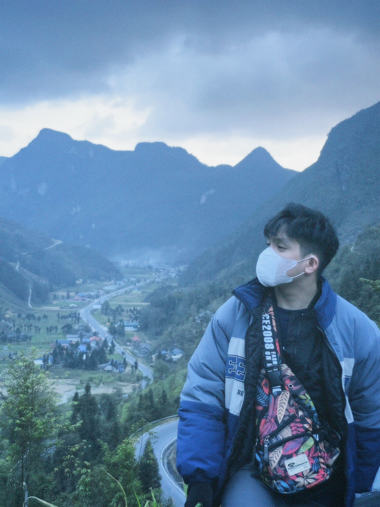

HÀ GIANG
Các địa điểm du lịch Hà Giang
Hà Giang, mảnh đất nơi địa đầu Tổ quốc luôn là một trong những điểm đến thu hút được rất nhiều du khách cả trong và ngoài nước, tuy nhiên liệu có bao giờ bạn tự hỏi ngoài những địa điểm mà hầu như ai khi tới Hà Giang đều biết như Cột cờ Lũng Cú, phố cổ Đồng Văn, Núi đôi Tam Sơn … thì ở Hà Giang còn những địa điểm nào thú vị khác không? Nếu có thời gian, để khám phá hết Hà Giang bạn sẽ cần bao nhiêu ngày? Lập một lịch trình đi Hà Giang thế nào để có thể đi được nhiều điểm, trong khoảng thời gian ít nhất? Cùng điểm qua các địa điểm du lịch Hà Giang mà có thể bạn đã từng nghe đến nhé.
Lịch trình Lịch trình đi phượt Hà Giang
Sau khi đến TP Hà Giang
Chúng ta sẽ bắt đầu cuộc hành trình đi khám phá Hà Giang nơi địa đầu tổ quốc
Tp Hà Giang
- Cột mốc KM 0
- Núi cấm sơn
Huyện Quản Bạ
- Chợ Quyết Tiến
- Cổng trời Quản Bạ
- Núi đôi Quản Bạ
- Động Lúng Khúy
- Xã Bát Đại Sơn
- Cây Cô ĐƠN
Yên Minh
- Hang Nà Luồng
- Động Én
- Rừng Thông
- Chợ Bạch Đích (Yên Minh)
Đồng Văn
- DỐC Thẩm Mã
- Cao Nguyên Đá Đông Văn
- Phố Cáo
- Phó Bảng
- Sủng Là
- Nhà Của PAO
- Tam giác mạch Lũng Táo
- Dinh Vương
- Cột cờ Lũng Cú
- Mốc cực bắc
- Phố cổ Đồng Văn
- Chợ Đông Văn
Mèo Vạc
- Đèo Mã Pì Lèng (tứ đại đỉnh đèo việt nam)
- Vách Đá Tử Thần
- Hẻm Tư Sản
- PARORAMA
- VIEWPOINT
- Chợ Đêm Khâu Vai
- Chợ Tình Khâu Vai
- Xã xa nhất của huyện Mèo Vạc
- Làng dân tộc Lô Lô,Sảng Pả A
Vị Xuyên
- Chùa Sùng Khánh
- Hang Vương Thiên
- Hồ Nong
- Hang Tùng Bá
- Cửa khẩu Thanh Thủy
Xí Mần
- Bãi đá Cổ Nấm Dần
- Khu di tích Thách Tiên -ĐÈO GIÓ
- Suối khoáng Quảng Nguyên
- Hang Thiên Thủy
- Cửa khẩu Xí Mần
- ĐỀN THỜ Gia Long
Hoàng Su Phì
- Bản Phin Hồ
- Ruộng bậc thang Hoàng Su Phì
BẮC Mê
- Hang Bắc Sơn
- Căng Bắc Mê
Bắc Quang
- Thác Thí
- Khu dí tích sinh thái Năm An s
- Khu dí tích sinh thái Hồ Quang Minh
- Hang Năm Pạu


